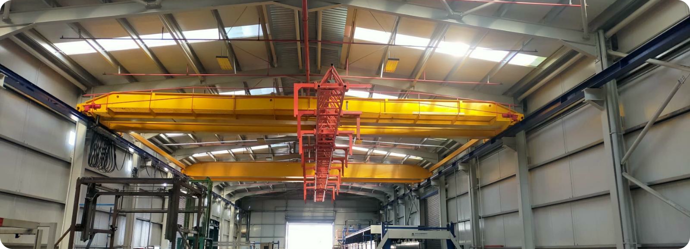
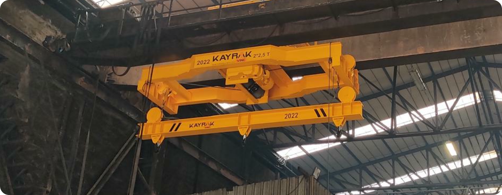
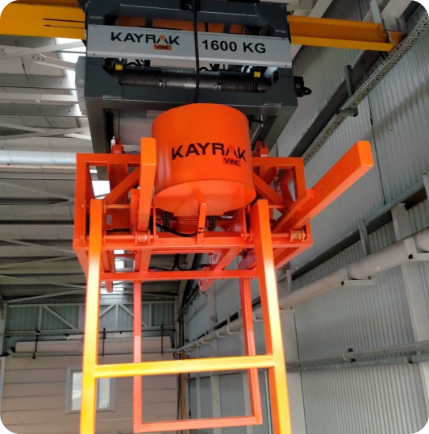
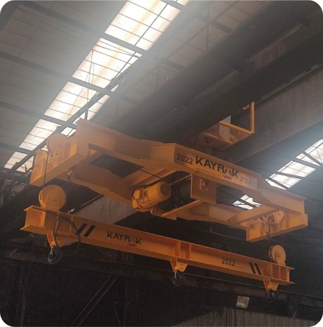
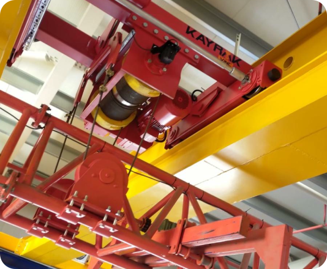

ÖZEL Tasarım Vinçler
İHTİYACINIZA ÖZEL, SİZE VE İŞE ÖZEL ÇÖZÜMLER
Standart vinç sistemleri her zaman tüm sahalara ve iş yüklerine tam uyum sağlamayabilir. Bu noktada, iş süreçlerinizi ve operasyon şartlarınızı derinlemesine analiz ederek, tamamen size özel vinç projeleri geliştiriyoruz. İster ağır sanayi, ister üretim hattı, ister lojistik depo alanı olsun; her sektör ve her uygulama için özel olarak tasarlanmış vinç çözümleri sunuyoruz.

Teknik Özellikler ve Tasarım Süreci
Kapsamlı İhtiyaç Analiz: Sahadaki alan ölçümleri, yük tipleri ve taşıma şartları detaylı olarak değerlendirilir.
Modüler ve Esnek Tasarım: Proje kapsamında vinç kirişleri, yürüyüş sistemleri, kaldırma kapasiteleri ve kumanda sistemleri ihtiyaca göre özelleştirilir
Malzeme ve Teknoloji Seçimi: En uygun malzeme ve teknolojiler kullanılarak dayanıklılık, güvenlik ve enerji verimliliği artırılır.
Simülasyon ve Test: Tasarlanan vinçler sanal ortamda test edilip optimize edilir, sahada montaj ve işlevsellik testleri yapılır.
Standartlara Tam Uyum: Projeler, ulusal ve uluslararası güvenlik standartlarına (CE, ISO, FEM) uygun şekilde gerçekleştirilir.

Özel Yapım Vinç Projelerimiz ile işletmenizin benzersiz ihtiyaçlarına yönelik en doğru, güvenilir ve sürdürülebilir kaldırma sistemlerini sunuyoruz. Uzman ekibimizle, sahada ve ofiste tüm süreç boyunca yanınızdayız.

Avantajları:
- İş akışınıza tam uyum sağlayan sistemler ile maksimum verimlilik
- Karmaşık ve standart dışı yüklerin güvenli taşınması
- Özel tasarım ile maliyet etkinliği ve yatırımın hızlı geri dönüşü
- Saha koşullarına göre optimize edilmiş enerji kullanımı
- Uzun vadeli bakım ve teknik servis kolaylığı
- Rekabet üstünlüğü sağlayan benzersiz çözümler
Teknik Yaklaşım
Projelerimiz, saha ölçümleri, yük analizleri ve çalışma koşullarına göre kişiselleştirilir. Vinçlerin taşıma kapasiteleri, kiriş tasarımları, kumanda sistemleri ve enerji verimlilikleri, sektör standartları (ISO, CE, FEM) ışığında optimize edilir. Bilgisayar destekli simülasyon ve prototipleme yöntemleri kullanılarak, tasarım sürecinin her aşamasında riskler minimize edilir.
Özel Yapım Sistemlerin Avantajları
İşletmenizin operasyonel verimliliğini artırırken, maliyet kontrolünü sağlar ve iş güvenliğini maksimuma çıkarır. Saha koşullarına göre uyarlanabilen esnek tasarımlar sayesinde, standart çözümlerle yaşanabilecek operasyonel aksaklıklar ortadan kalkar.Ayrıca uzun vadeli teknik servis ve bakım desteğimizle yatırımınızın ömrünü uzatır, üretim sürekliliğinizi garanti altına alırız.


İhtiyacınıza Özel, Teknoloji ve Uzmanlıkla Tasarlanmış Vinç Çözümleri
Endüstriyel vinçlerde standart ürünler her zaman tüm işletmelerin karmaşık ihtiyaçlarını karşılamayabilir. Bu nedenle firmamız iş süreçlerinizi detaylı analiz ederek tam olarak ihtiyacınıza uygun özel vinç projeleri tasarlamakta ve hayata geçirmektedir. Mühendislik uzmanlığımız ve gelişmiş teknoloji altyapımızla her projenin performans, güvenlik ve ekonomik verimlilik hedeflerini en üst seviyede tutuyoruz.